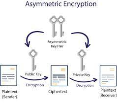

Cryptosystems use a set of procedures known as cryptographic algorithms, or ciphers, to encrypt and decrypt messages to secure communications among computer systems, devices such as smartphones, and applications. A cipher suite uses one algorithm for encryption, another algorithm for message authentication, and another for key exchange. This process, embedded in protocols and written in software that runs on operating systems and networked computer systems, involves public and private key generation for data encryption/decryption, digital signing and verification for message authentication, and key exchange
Single-key or symmetric-key encryption algorithms create a fixed length of bits known as a block cipher with a secret key that the creator/sender uses to encipher data (encryption) and the receiver uses to decipher it. Types of symmetric-key cryptography include the Advanced Encryption Standard (AES), a specification established in November 2001 by the National Institute of Standards and Technology as a Federal Information Processing Standard (FIPS 197), to protect sensitive information. The standard is mandated by the U.S. government and widely used in the private sector. In June 2003, AES was approved by the U.S. government for classified information. It is a royalty-free specification implemented in software and hardware worldwide. AES is the successor to the Data Encryption Standard (DES) and DES3. It uses longer key lengths (128-bit, 192-bit, 256-bit) to prevent brute force and other attacks. Public-key or asymmetric-key encryption algorithms use a pair of keys, a public key associated with the creator/sender for encrypting messages and a private key that only the originator knows (unless it is exposed or they decide to share it) for decrypting that information. The types of public-key cryptography include RSA, used widely on the internet; Elliptic Curve Digital Signature Algorithm (ECDSA) used by Bitcoin; Digital Signature Algorithm (DSA) adopted as a Federal Information Processing Standard for digital signatures by NIST in FIPS 186-4; and Diffie-Hellman key exchange. To maintain data integrity in cryptography, hash functions, which return a deterministic output from an input value, are used to map data to a fixed data size. Types of cryptographic hash functions include SHA-1 (Secure Hash Algorithm 1), SHA-2 and SHA-3.
